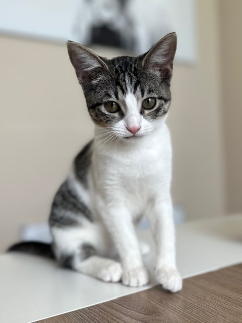

Amazing Kitten Adoption Article
Keith WarrenOn July 6th, 2023 while visting family in Houston, TX we visited the local pet shelter and came across 'The Sisters Kittens'. Unfortunately, we were visting the shelter after hours for adopting and was told we would have to come back the next day. When we returned the next day to adopt them both, but only one kitten was remaining. We tried to get the information of the person that adopted only one of the kittens, but the shelter would not share their information due to privacy.
Khalessi
Name: Khalessi | Breed: Domestic Short Hair Tabby | Age: Aproximately 10 weeks